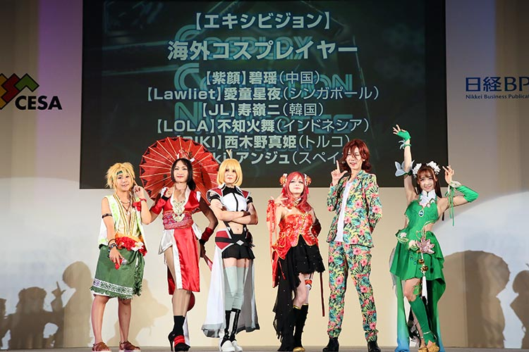

The first visit to TGS -Public Day Version-

-
Ticket
Tips for Entry
-
TIPS on the venue
Re-entry & Exit
We recommend that you get an idea of the look and feel of Tokyo Game Show 2017 (TGS 2017) in advance. Please note, however, that there will be some differences between TGS2017 and previous TGSs, so the photos are for reference purposes only.
Re-entry & Exit, etc.
-
Re-entry
-
Even if you leave the venue once, you can enter the venue again as many times as you want during the opening hours until 4:30 p.m.
Please ask the staff for a stamp that becomes visible by illuminating it with a black light when you leave. If you happen to make exit through the gate with a sign “NO EXIT”, you will not be stamped. Make sure to use the gate where a staff stands.
It may come off when you wash your hands, so please be careful. When you enter again, have the staff check your stamp at the re-entry entrance.
Admission ticket of Public Day is valid for one day, buy another ticket for the second day.
-
About Exit Time
-
Visitors MUST leave the site by 5 p.m. Usually from around 4:50 p.m., the companions at some of the exhibitor's booth all line up to see the visitors off, but please make sure to leave the site by 5 p.m.
-
To attend cosplay event after the venue closed
-
On September 23 (Saturday) "Cosplay Collection Night @TGS"（organized by Cure）will be held at the Event Stage of Hall 1 from 6:30 p.m. after the doors close.
To see the “Cosplay Collection Night”, you need to have a numbered ticket. This numbered ticket will be distributed on September 23 from the time doors open at "Cosplay Area" in Hall 9.
Detailed info will be posted on TGS Official site Cosplay Collection Night @TGS section.

- 